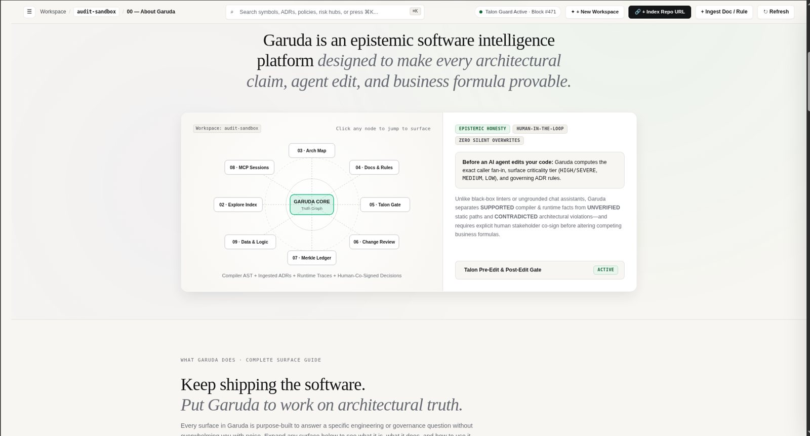

AI can write the code. Garuda makes sure the change respects your system.
Before your coding assistant edits, Garuda tells it what depends on that code and which rules apply. After the edit, it checks the change and says allow, warn, review or block. Every saved decision goes into a tamper-evident record. All of it runs on your machine.
Free and open source under Apache-2.0. Works with Claude Code, Cursor, Codex and any assistant that speaks MCP.
- 3
import ( - 4
"context" - 5
"database/sql" - 6
"acme-pay/internal/domain" - 7
)
Payment code imports database/sql directly instead of domain.PaymentRepository.
Repair: remove "database/sql"; call h.repo.RecordChargeTx(ctx, req).
- 21
return h.repo.RecordChargeTx(ctx, req)
The second check passes. Old problems elsewhere in the repository are counted separately and do not block this change.
An illustration of one change. The rule, location and repair text are what garuda demo prints for its planted bug.
Three moments in every change
Your assistant is good at writing code. It does not automatically know every decision your team made, every part of the system that depends on the code, or every rule that has to stay true.
Before the edit: know the impact
The assistant asks Garuda first and learns who calls the code, how far a change spreads, and which written rules apply.
After the edit: enforce the rules
The change is checked against your rules. Problems this change introduced are kept apart from problems that were already there, so you only answer for what is new.
Afterwards: keep the evidence
A saved check becomes a receipt in a Merkle log that shows if a record was changed later, with the exact command to reproduce it.
Merkle Seal RFC 6962 block #2012
Status COMMITTED ✓
Stops the change and tells the assistant exactly what to move and where.
The evidence backs this claim, within what was checked.
Found in the code or docs but not confirmed yet. Not an error.
The evidence conflicts with a rule or claim you wrote down.
Your code stays on your machine
Garuda is built to sit next to your most sensitive code: payments, ledgers, health data. So it was designed from the start to need nothing from us.
It runs where your code is
Analysis, the code map and every check run locally. Results live in a PostgreSQL database on your own machine, which setup starts on 127.0.0.1.
There is no Garuda cloud
No account with us and nothing to sign up for. The dashboard's login exists only on your machine.
Garuda itself uses no AI model
Its analysis and checks are deterministic code, so Garuda sends nothing to an AI provider. The analyzer is tested to give identical results on repeated runs.
Telemetry is off
It stays off unless you switch it on and give it an address of your own. There is no default destination.
The dashboard loads nothing from the internet
No outside scripts, fonts or trackers. It works on an air-gapped machine.
Every line is open
Apache-2.0. Read it, audit it, build it yourself.
Leaves your machine only if you set it up
- Slack or Teams alerts you turn on
- The pull request check, which runs in your own CI
- Telemetry, sent to an address you choose
- Cloning a repository you point it at
Real output, as printed
Two recorded runs, shortened, with nothing reworded. No mock-ups.
What you get, free
Everything below is in the open-source release and runs locally.
For your AI assistant
- An MCP server with 54 tools (41 read-only) and 6 skills that tell the assistant when to use them
- Plugins for Claude Code and Codex;
garuda initsets up Cursor and Claude Desktop - A guard that runs before and after every edit
- Read-only mode, and a named human approver for tools that change state
For your rules
- Ready-made rule sets: layered, hexagonal, microservices, no circular imports, financial, zero-trust auth, AI agent safety, PII and GDPR/HIPAA, idempotent mutations
- Your design docs and ADRs turned into rules, linked to the code they describe
- No docs yet? A drafted rulebook from your code, for you to approve
- Import from ArchUnit, Dependency-Cruiser and Import Linter
For every pull request
- A GitHub Action that posts the verdict, a receipt hash and a command to reproduce it
- BLOCK fails the check; make it required and nobody merges past it
- A verdict comment, and findings in GitHub's Security tab
- Optional Slack or Teams alerts
For understanding impact
- Who calls this code, and how far a change spreads
- High, medium and low tiers, so heavily used code is protected from silent rewrites
- A focused map of the neighbourhood you care about, not one tangled graph
For evidence
- An RFC 6962 Merkle log of saved decisions
- Receipts you can verify, with the exact command that produced them
- Inclusion proofs you can check from the dashboard
For numbers that disagree
- Lines up two versions of the same metric, for example one query dividing by
1e7and another by1e8 - Shows the formulas it found in the code and asks a person to decide. It does not guess.
Languages. Go is read with the compiler's own type checker. Python and TypeScript are in Beta. Java is in Beta in the latest source.
A dashboard that runs on localhost
Ten views of your system, served from your machine at localhost:8080. These are screenshots of the real thing.



The front page: every part of Garuda, one click away.
Measured, with the method published
Recorded on 27 October 2026 for the v1.9.9 line. Every number can be re-run on your own checkout.
| 24/24 | Ground-truth analyzer benchmarks passed, with the same result on repeated runs |
| 63/63 | Multi-repository checks of the MCP server and guard |
| 14 | Go repositories validated: 4,888 entities and 5,894 relationships |
| 10/10 | Injected runtime contradictions detected in a controlled test |
Details and boundaries: EVIDENCE.md. A benchmark result is not a universal guarantee.
Install in a few minutes
One command installs it, starts a local database and the dashboard, and prints your login.
curl -fsSL https://raw.githubusercontent.com/myshra777-ai/garuda/main/install.sh | bash
Prefer to read it first? Clone the repository and run ./setup.sh.
git clone https://github.com/myshra777-ai/garuda.git cd garuda ./setup.sh
Set-ExecutionPolicy Bypass -Scope Process -Force; irm https://raw.githubusercontent.com/myshra777-ai/garuda/main/install.ps1 | iex
Windows 10 or 11, PowerShell 5.1 or 7. Setup installs the Microsoft Visual C++ runtime if it is missing.
npx garuda-guard demo
Runs the demo with no database. Needs Node 18 or newer.
Paste one prompt into ChatGPT, Claude, Codex or Cursor and let it install Garuda for you.
Get the promptThen point it at your project
garuda init . --wizard # five short questions garuda rulebook generate # drafts rules from your code garuda check . --diff HEAD # checks what you just changed
Connect your assistant
| Claude Code | /plugin marketplace add myshra777-ai/garuda, then /plugin install garuda@garuda |
| OpenAI Codex | codex plugin marketplace add myshra777-ai/garuda |
| Cursor | Run garuda init |
| Any MCP client | Run garuda-mcp over stdio |
What Garuda does not do
We would rather you trust the rest of this page.
It is not a cage for your assistant
An assistant can ignore advice, and hooks can be switched off. The check that cannot be skipped is a required pull request check.
Static analysis has edges
Go is read with the compiler's type checker. Python, TypeScript and Java are high-precision but Beta, and dynamic runtime behaviour is outside what static analysis can see.
The log proves records were not changed
It does not prove the analysis was complete. And a result is sealed only when the check is saved.
The number tools help a person decide
They line up the formulas you point them at. They do not understand every calculation in a company by themselves.
For teams
For engineering teams that use AI assistants on code where one structural mistake is expensive.
A pilot on your repository
We set Garuda up with you on one repository, write down the rules your team already follows, and go through the findings together. Your code stays on your machines. Early pilots are free while the offer is shaped with real teams.
Ask about a pilotGaruda for organisations
Not available yet. What we are planning, shaped by the teams we work with:
- Shared rules across every repository and assistant
- Approvals for exceptions, with a record of who decided
- Single sign-on and long-term audit storage